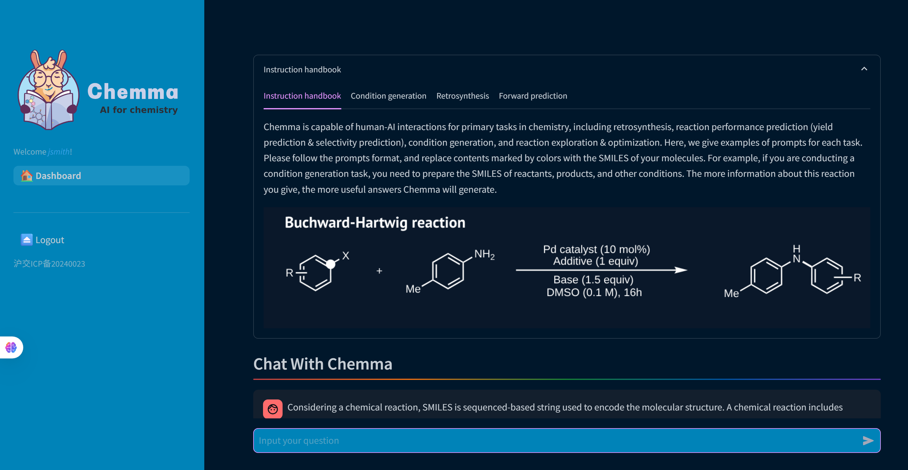
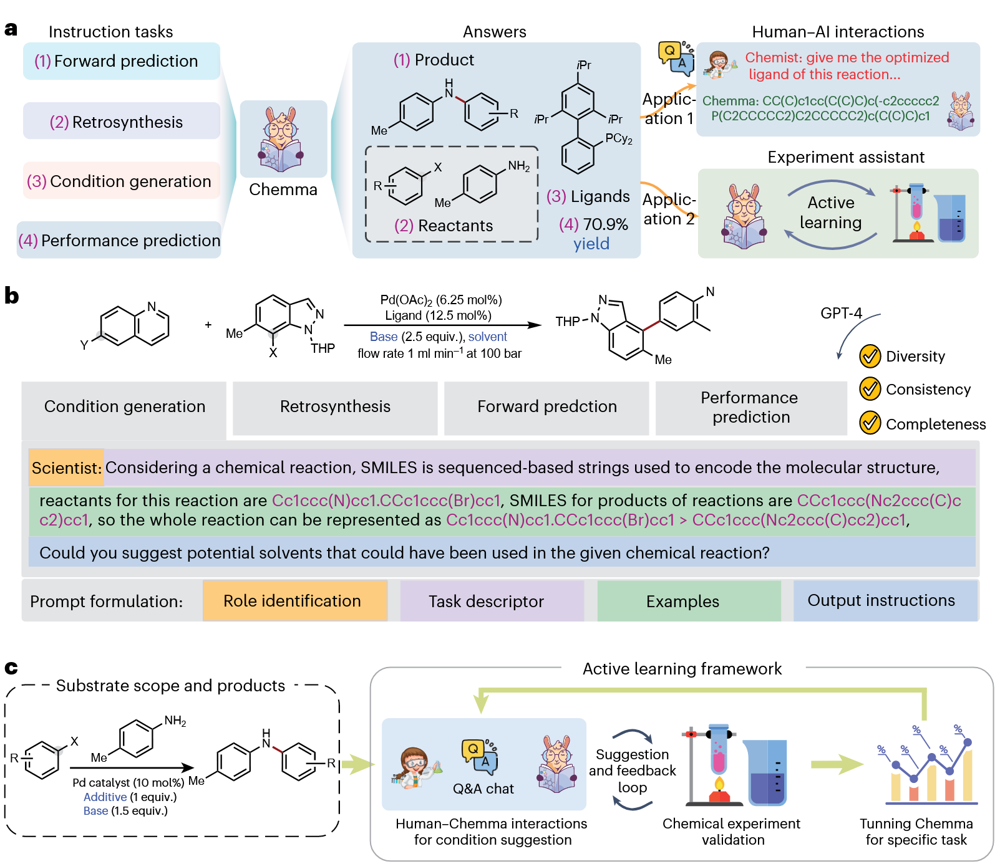
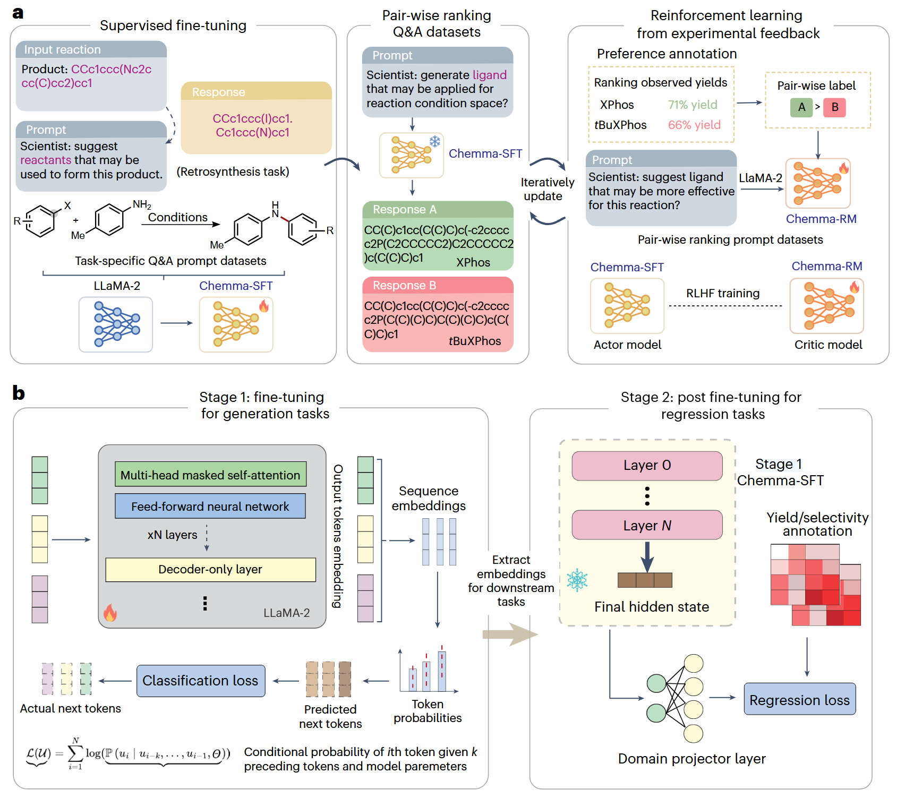
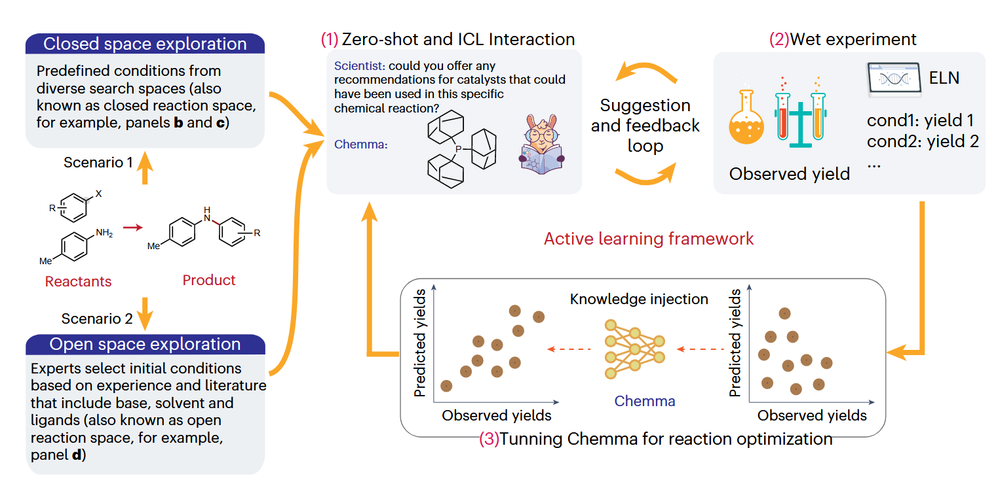
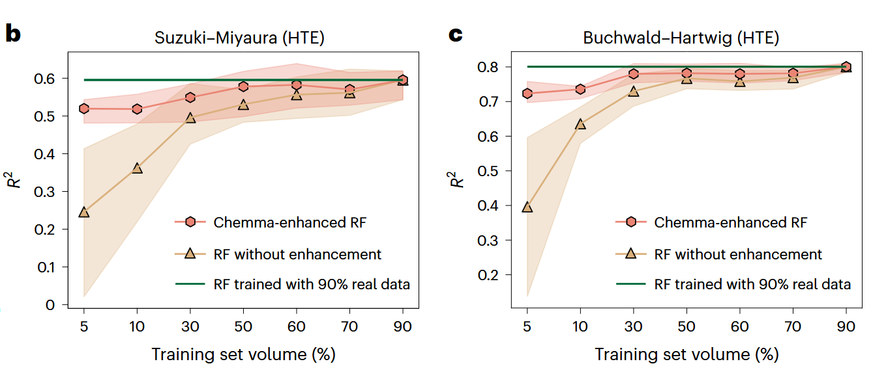
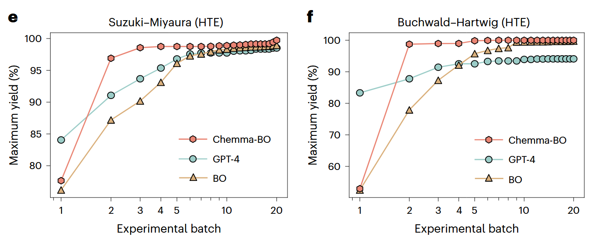
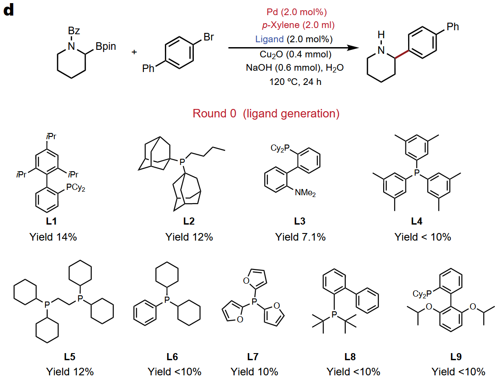

化学合成分子，作为创造新物质的核心科学，深刻影响着从新药研发到能源材料的每一个前沿领域。然而，这一创造过程至今仍严重依赖于化学家们耗时、昂贵且充满不确定性的“试错”实验。如果AI能像一位资深化学家一样，不仅能预测反应，更能主动探索和优化实验条件，将会带来怎样的变革？今天，我们解读一项重磅研究，它推出了一个专为化学合成打造的大语言模型——Chemma。这不仅是一个模型，更是一个强大的AI助手，它在多项关键化学任务中刷新了纪录，并成功指导了真实世界中未知反应的优化，展示了通用人工智能赋能有机化学的巨大潜力。

https://ai4chem.sjtu.edu.cn/home
亮点
- 推出强大的化学大模型Chemma： 研究人员通过高达128万个化学反应问答对，对Llama-2-7B模型进行了全面的精细微调，构建了一个专注于有机合成的专业AI助手——Chemma。
- 在多项关键化学任务中取得SOTA： Chemma在单步逆合成、产率预测、选择性预测等多个基准任务上，超越了以往所有已知的最佳结果，展示了其卓越的化学知识理解和推理能力。
- 赋能数据稀疏场景并加速反应优化： Chemma不仅能作为数据生成器，在少量真实数据下显著提升传统模型的性能；还能与贝叶斯优化结合，将寻找最佳反应条件的效率提升数倍。
- 在开放反应空间中成功指导未知反应的合成： 在一项全新的、未曾报道的Suzuki偶联反应中，通过“人-机协作”的主动学习框架，Chemma仅用15次实验就成功找到了合适的配体和溶剂，实现了67%的分离产率，充分验证了其在加速真实化学发现中的巨大价值。
为什么做这个？ 打破试错瓶颈，革新合成范式
这项研究的出发点，直指现代有机化学合成的核心痛点。长期以来，新分子的发现和合成路线的优化，在很大程度上是一门依赖化学家直觉和大量试错实验的艺术。尽管过去几十年化学仪器取得了长足进步，但面对浩瀚的反应空间和复杂的分子结构，化学家们仍需反复查阅文献、设计方案并进行湿实验验证。
为了改变这一现状，AI技术被寄予厚望。传统的AI方法，如基于密度泛函理论（DFT）计算或贝叶斯优化的模型，虽然在特定任务上取得了进展，但存在明显局限：它们通常严重依赖专家知识进行特征工程和分子参数化，需要高通量实验平台提供大量数据，并且大多只能在专家预先设定的“封闭反应空间”（如一个固定的配体或溶剂库）内进行优化，这可能导致错过性能更优的未知选择。
近年来，以GPT为代表的大语言模型（LLM）展现了强大的通用能力，但在化学领域的应用仍处于初级阶段，其化学专业能力有限，难以自主探索和优化未报道的反应。面对这些挑战，研究者们提出了一个核心问题：我们能否构建一个深度融合化学知识的大语言模型，它既能像人类化学家一样从SMILES分子式和反应数据中理解化学结构和规律，又具备LLM的强大生成能力，从而能够在开放的反应空间中进行真正的探索与发现？
这正是Chemma诞生的驱动力。研究者认为，LLM是解决上述问题的理想方案，因为：（1）LLM能从SMILES序列中学习分子表征，理解化学结构；（2）通过海量反应数据预训练，LLM能像化学家一样学习反应物、产物和条件之间的复杂关系；（3）LLM的生成能力使其能够设计全新的分子（如推荐新配体），从而突破预设条件的限制。Chemma旨在成为这样一个能够与化学家互动、辅助实验决策、并最终加速有机合成进程的生成式AI助手。
怎么解决？ 精调大模型并构建主动学习框架

Chemma的功能和应用。a、使用Chemma加速有机化学合成的说明。科学家可以与Chemma就四个主要任务进行互动，包括前向预测、逆向合成、条件生成和性能预测（例如产量和选择性）。我们还提出了一个主动学习框架，使用Chemma作为实验助手，以加速对新反应空间的探索。b、准备问答对的提示模板。监督微调数据集的构建涉及使用GPT-4为每个任务生成2000个问题提示模板，确保训练数据集的多样性、一致性和完整性。c、实验指导的主动学习框架。化学家可以在基于主动学习框架的普遍适用的闭环工作流程中与Chemma进行交互，以探索新的反应空间。来源：Freepik.com，a和c中的化学家和化学仪器。
Chemma的设计理念是成为一名能与化学家流畅交互的AI助手。为此，研究人员将化学语言（SMILES分子式）与自然语言无缝集成，使其能够理解并执行多种化学任务。如论文图1所示，Chemma的核心功能覆盖了四大任务：正向反应预测、逆合成、反应条件生成以及反应性能（产率和选择性）预测。
为了构建Chemma，研究团队首先从公开数据库中提取了海量的反应数据。随后，他们设计了一个巧妙的提示生成系统，借助GPT-4的强大能力，将这些原始数据转化为多样化的、任务导向的“问题-答案”对，最终构建了包含128万样本的庞大训练集。

Chemma的模型架构和化学任务的训练策略。a、Chemma的模型架构。我们首先通过使用多任务问答数据集（包括前向预测、逆向合成和条件生成）对基础LLaMA-2-7b模型进行微调来开发Chemma SFT。具体到条件生成，我们进一步推导了用于反应优化的Chemma RM。RLHF，从人类反馈中强化学习。b、反应性能预测的两阶段训练策略。在第一阶段，我们在训练有素的Chemma SFT中提取反应包埋物。在第二阶段，我们使用多层感知器网络进行回归任务，包括产量和选择性预测。xN，隐藏层数；L，LLM的目标函数；UU，整个单词标记序列的矩阵；u，第i个位置之前的标记；N，单词标记序列的长度；Θ，LLM的参数。
Chemma的模型架构和训练策略也经过精心设计，如论文图2所示。其开发过程包含两个关键技术：一是通过监督式微调（SFT），在多任务问答数据上训练出具备广泛化学推理能力的Chemma-SFT模型；二是对产率等回归任务，采用两阶段训练策略，即先用Chemma-SFT提取反应的深层语义表征，再基于此训练一个轻量级的回归网络。

Chemma驱动的反应探索和优化主动学习框架概述。给定一个新的反应，Chemma可以在两种情况下工作：（1）预定义反应空间和（2）开放反应空间。接下来，在“建议和反馈循环”中，化学家们遵循Chemma的建议进行湿实验。结果存储在ELN中。经过一轮实验，如果没有达到目标产量，化学家可以微调Chemma并开始新一轮的探索。
更具开创性的是，研究人员将Chemma整合进一个主动学习框架中（论文图5a）。在这个框架中，Chemma首先根据化学家的目标提出初始实验建议，化学家进行实验后将结果反馈给Chemma，然后Chemma根据新的实验数据进行“在线”微调，从而对该特定反应有了更深的理解，并在此基础上提出下一轮更优的实验建议。这个“建议-实验-反馈-微调”的闭环，使得Chemma具备了在未知领域持续学习和探索的能力。
实验设置
为了全面检验Chemma的真实能力，研究团队设计了一系列层层递进的实验。首先，在多个公开基准数据集上，对其在单步逆合成、配体推荐、产率预测、区域/对映选择性预测等核心任务上的性能进行了评估。其次，验证了Chemma作为“数据生成器”，能否在数据稀疏的情况下，通过生成高质量伪数据来提升传统机器学习模型（如随机森林）的性能。再次，将Chemma与贝叶斯优化（BO）相结合，测试其加速反应条件优化的能力。最后，也是最激动人心的，研究团队进行了一项真实世界的湿实验，在一个完全未知的、开放的反应空间中，利用主动学习框架，验证Chemma指导合成全新分子的能力。
结果怎么样？ 基准测试领先，真实探索成功
Chemma在一系列实验中展现了其卓越且多维度的能力，其意义远超一个单纯的预测模型。
1. 作为独立的化学专家，性能卓越。 在多项基准测试中，Chemma均表现出色。例如，在单步逆合成任务中，其Top-1准确率达到72.2%，大幅超越了之前的SOTA模型。在区域选择性和对映选择性预测中，Chemma也达到了与需要复杂DFT计算的专门模型相媲美的水平。这证明了Chemma仅通过学习SMILES序列，就掌握了深刻的化学知识和分子表征能力。
2. 作为“数据放大器”，赋能传统方法。 如论文图4b,c所示，实验证明，Chemma生成的伪数据可以极大地弥补真实数据的不足。当只有5%的真实实验数据时，一个普通的随机森林模型性能很差；但如果用Chemma生成的85%的伪数据来“填充”，该模型的性能几乎可以达到用90%真实数据训练的水平。这对于昂贵、耗时的化学实验而言，意味着巨大的成本节约和效率提升。

3. 作为“优化加速器”，效率惊人。 当与贝叶斯优化结合（Chemma-BO），Chemma的价值被进一步放大。如论文图4e,f所示，在两个反应优化任务中，Chemma-BO仅用10-15次实验就能达到98%以上的产率，而传统的BO方法则需要50次以上，通用的GPT-4甚至在更复杂的反应中难以找到优解。这表明Chemma深刻的化学理解能力能够为优化算法提供极高质量的“先验知识”，从而大大缩短探索进程。

4. 作为“科研合伙人”，探索未知领域。 最具突破性的成果来自于对一个全新的、未报道的铃木-宫浦偶联反应的探索。如论文图5d所示，这是一个开放空间的探索，没有任何预设的配体或溶剂库。通过“人-机协作”的主动学习循环，在经历了第一轮的失败尝试后，经过实验数据反馈和在线微调的Chemma，在第二轮便精准地推荐了高效的配体（PAd3），最终仅用15次实验，就成功实现了67%的分离产率。这历史性地证明了，一个大语言模型不仅能“复现”已知，更能真正地参与到“探索”未知的科学发现过程中。

局限与展望
研究团队对Chemma进行了客观而审慎的讨论。他们坦诚，对于数据极度稀疏的反应，Chemma的性能仍有提升空间；同时，LLM固有的“幻觉”问题可能导致其提出不可行的合成路线，因此必须在化学家的监督下作为“副驾驶”使用。此外，研究人员还深入探讨了模型被用于合成有害物质的潜在风险，以及AI生成内容的知识产权归属等伦理问题，并提出了包括安全审查、硬编码模板和与法律专家合作等一系列应对策略。
展望未来，Chemma开启了广阔的可能性。下一步的研究重点将包括深入探索Chemma内部化学表征的“可解释性”，以及将其与机器人等实体AI相结合，构建真正意义上的“自主化学实验室”。总而言之，Chemma的成功，不仅为化学合成领域提供了一个强大的AI助手，更重要的是，它为如何利用定制化的大模型加速基础科学研究，提供了一个光辉的范例。
标题：Large language models to accelerate organic chemistry synthesis
https://doi.org/10.1038/s42256-025-01066-y